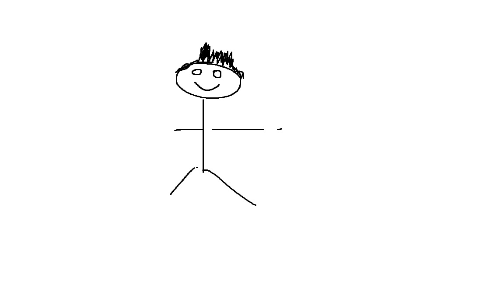

Intressen- Datorn
- Umgås med vänner
- Gymma och andra fysiska aktiviteter
- Mamma Carola
- Pappa Inge
- Lillasyster Alice
- Halv bror Chrisoffer
- Bra grejer:
- Jag är medel bra på ganska mycket. Olika dator spel, laga mat, olika sporter och vara en bra vän.
- Mindre bra på:
- Jag är mindre bra på att programmera, passa tider och äta.
Jag gick tidigare Hotell och Restaurang på Ölandsgymnasium som ligger på Öland. Grundskolan gick jag på Dackeskolan som ligger i Tingsryd.
Arbetslivserfarenhet- Ronneby brunn
- Köket, sommarjobb
- Eriksberg vilt resarvat
- Köket, praktik
- Korrö restaurang
- Köket, sommarjobb
Nej, men jag tycker det ska bli väldigt kul att lära sig.
Vad fick dig att söka denna utbildningen?Jag har kollat runt väldigt mycket på olika programmerings program. Men denna var den som var bredast och jag kände mest för.
Tankar för framtiden?Att kunna programmera så att man kan jobba på ett företag och utveckla nya saker och kanske starta något eget.